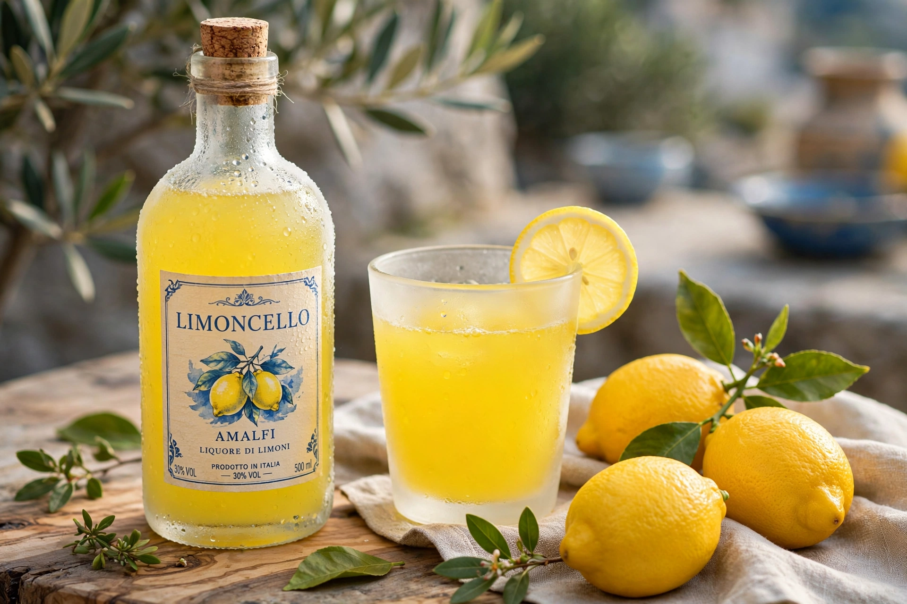

Limoncello

Type: Lemon liqueur
Origin: Southern Italy (Campania, Amalfi Coast, Capri, Sicily)
Alcohol by volume: ~25–30%
Colour: Bright yellow
Limoncello is an Italian lemon liqueur mainly produced in southern Italy, especially in the region around the Gulf of Naples, the Amalfi Coast, the island of Capri and Sicily. It is made by steeping lemon zest in rectified spirit until the aromatic oils are released, then mixing the resulting yellow liquid with simple syrup. Limoncello is typically bottled at around 25–30% alcohol by volume.
Production
Traditional recipes use large, thick-skinned local lemons — such as the Femminello St. Teresa and the protected Sfusato Amalfitano — whose zest is rich in essential oils and low in bitterness if the white pith is excluded. The zest macerates in high-proof alcohol for several weeks before dilution and sweetening. The result is a smooth, intensely lemon-flavoured liqueur, cloudy or clear depending on the process, with comparatively little sourness because no lemon juice is used.
Serving
Limoncello is served ice-cold, usually neat in a chilled small glass as a digestivo after meals. It is also used in cocktails, desserts and cooking, and home production is widespread in southern Italy. Variants include crema di limoncello, made with milk or cream, and analogous liqueurs made from other citrus fruits, such as arancello (orange).
Origins
The liqueur's precise origin is disputed among Capri, Amalfi and Sorrento, each with family traditions claiming invention in the early 20th century or earlier; commercial production and the registration of the Limoncello name date from the 1980s, after which it became one of Italy's most popular liqueurs worldwide.